أثر الثنائيات في تطور العناقيد النجمية من السحب الجزيئية المضطربة
الملخص
تتكوّن معظم النجوم الضخمة في أنظمة ثنائية أو أعلى رتبة داخل عناقيد متكتلة وذات بنى فرعية. وفي المراحل الأولى جدا من حياتها، يُتوقع أن تتفاعل هذه النجوم مع البيئة المحيطة قبل أن تُطلق إلى المجال عندما يتعرض العنقود للتفكك المدي بفعل المجرة المضيفة. نقدم مجموعة من محاكيات Nbody لوصف تطور العناقيد النجمية الفتية ومحتواها الثنائي في المراحل الأولى من حياتها. ولهذا الغرض، طوّرنا طريقة تولد شروطا ابتدائية واقعية للنجوم الثنائية في العناقيد النجمية انطلاقا من محاكيات هيدروديناميكية. نظرنا في حالات تطورية مختلفة لتكميم أثر التطور الثنائي والنجمي. وقارنا كذلك تطورها بتطور نماذج King والنماذج الكسيرية ذات مقاييس أطوال مختلفة. تشير نتائجنا إلى أن التمدد الكلي للعنقود في المحاكيات الهيدروديناميكية يتوازن في البداية مع حركة التكتلات الفرعية، ثم يتسارع عند بلوغ شكل أحادي البنية، كما في تطور ما بعد انهيار اللب. وبالمقارنة مع الشروط الابتدائية الكروية، تُظهر نسبة نصف قطر Lagrangian البالغ 50% إلى نصف قطر Lagrangian البالغ 10% منحى مميزا جدا، يفسره تشكل لب ساخن من النجوم الضخمة تحفزه الدرجة الابتدائية العالية من الفصل الكتلي. أما فيما يتعلق بجماعة الثنائيات فيه، فيُظهر كل عنقود سلوكا ذاتي التنظيم عبر إنشاء ثنائيات متفاعلة ذات طاقات ربط من رتبة مقاييس طاقته. كذلك، في غياب الثنائيات الأصلية، تُظهر الثنائيات المتشكلة ديناميكيا كسرا ثنائيا معتمدا على الكتلة يحاكي منحى الكسر المرصود.
keywords:
النجوم: الحركيات والديناميكيات – المجرات: العناقيد النجمية: عام – العناقيد المفتوحة والترابطات: عام – الثنائيات: عام – الطرق: عددية1 مقدمة
تتكون معظم النجوم بوصفها أعضاء في عناقيد أو ترابطات، تُظهر توزيعا مكانيا متكتلا وقد تحتوي أيضا على بنى فرعية (larson95). إن فهم التطور المبكر لهذه المركبات المشكِّلة للنجوم ذو أهمية أساسية لاستيعاب خصائص العناقيد الفتية ( Myr) والعناقيد المفتوحة (Portegies-Zwart10)، حيث تُرصد البنى الفرعية والكسيرية (مثلا، Cartwright04; Sanchez09; Parker12; Kuhn19). كذلك تتميز هذه الأنظمة بحركيات داخلية معقدة، مثل الحركات النسبية للتكتلات الفرعية واندماجاتها، وتمدد العنقود، وتبدد الغاز (Kuhn19; Cantat-Gaudin19) والدوران (Henault-Brunet12). وبوجه خاص، يدفع تبدد الغاز الناجم عن الرياح النجمية وانفجارات المستعرات العظمى العنقود إلى الخروج من الاتزان الديناميكي، مؤديا إلى طور تمدد تصبح فيه معظم النجوم غير مرتبطة وتنتشر في المجال (hills80; goodwin06; baumgardt07; pfalzner09). وقد تبقى بعض هذه الخصائص الولادية حتى أثناء التطور اللاحق للنظام النجمي، وتترك بصمة في الخصائص المرصودة للعناقيد النجمية الأقدم والمسترخية (على سبيل المثال، قد تسهم في سمات الدوران المرئية في بعض العناقيد الكروية، vanLeeuwen00; Pancino07; Bianchini13; Kamann18; Bianchini18).
في المراحل الأولى من حياة العناقيد النجمية الفتية، يتأثر تطورها الديناميكي بعمق بمحتواها النجمي والثنائي، والعكس صحيح. وبوجه خاص، فإن جزءا كبيرا من أكثر النجوم ضخامة هو جزء من أنظمة ثنائية وأعلى رتبة (moe17) يمكنها تبادل الطاقة والزخم الزاوي بنشاط مع البيئة المضيفة بفضل الكثافة العالية جدا ( M⊙ pc-3) في لب العنقود. فمن جهة، تحتوي النجوم الثنائية الأصلية (أي النجوم التي تتكون كأعضاء في نظام ثنائي) على خزان كبير من الطاقة الداخلية، يمكن نقله إلى نجوم أخرى في العنقود النجمي المضيف عبر لقاءات ثلاثية ومتعددة الأجسام (مثلا، heggie75; hut83)، بما يمنع الانهيار الحراري الثقالي للب العنقود أو يعكسه (chatterjee13; fujii14). ومن جهة أخرى، يؤثر التطور الكلي للعنقود في خصائص جماعة الثنائيات: فعلى سبيل المثال، يؤدي انهيار اللب إلى تشكل أنظمة ثنائية جديدة وإلى تصليبها الديناميكي (spitzer71). وعلاوة على ذلك، تتأثر النجوم الثنائية أيضا بانتقال الكتلة، والغلاف المشترك، وركلات المستعرات العظمى، والمد والجزر، وعمليات تطورية أخرى (مثلا، hut81; webbink84; portegieszwart96; hurley02). وتعد جميع هذه العمليات حاسمة لقذف النجوم من عناقيدها النجمية المضيفة (مثل النجوم الهاربة، Fujii and Portegies Zwart, 2011)، ولتكوّن الثقوب السوداء متوسطة الكتلة (مثلا، Ebisuzaki01; portegieszwart04; Giersz15; mapelli16). وأخيرا، يمكن للتفاعل المتبادل بين التآثرات الديناميكية والتطور الثنائي (banerjee10; ziosi14; banerjee17; fujii17; dicarlo20; kumamoto19; antonini20; trani21) أن يفسر خصائص الأجرام المدمجة الثنائية المرصودة عبر كشف الموجات الثقالية بواسطة LIGO وVirgo (abbottO3a; abbottO3apopandrate).
تُعتمد عادة محاكيات Nbody المباشرة لتكامل الديناميكيات التصادمية للعناقيد النجمية الخالية من الغاز، حيث يجب إدراج مقاييس طول تمتد على رتب مقدار مختلفة، من انفصالات ثنائية تبلغ بضعة أنصاف أقطار شمسية إلى عدة فراسخ فلكية. غير أن دراسات هذا النوع تفتقر غالبا إلى شروط ابتدائية واقعية. فعلى سبيل المثال، تتضمن محاكيات Nbody المباشرة الحديثة للعناقيد النجمية دوال كتلة نجمية واقعية وتطورا نجميا، غير أن معظمها يبدأ من نماذج كروية مثالية، مثل نماذج plummer11 أو king66. وفي بعض الأعمال الحديثة، اعتُمدت شروط ابتدائية كسيرية لمحاكاة التكتل الابتدائي للعناقيد النجمية (مثلا، Goodwin04; Schmeja06; Allison10; Kupper11; Parker14b; dicarlo19; Daffern-Powell20). وقد حاولت دراسات قليلة إعادة محاكاة الشروط الابتدائية الناتجة عن محاكيات هيدروديناميكية لتشكل العناقيد النجمية باستخدام كود Nbody مباشر (Moeckel10; Moeckel12; Parker13; Fujii15a)، لكن معظمها لا يتضمن التطور النجمي أو دوال كتلة نجمية واقعية أو جماعات ثنائيات أصلية. وقد اقتُرحت مؤخرا محاولة لقرن الهيدروديناميك المغناطيسي بمحاكيات Nbody لتشكل العناقيد النجمية، مع أخذ وجود الثنائيات الأصلية في الحسبان أيضا، بواسطة cournoyercloutier20، إذ طوّر خوارزمية لتوليد الثنائيات متسقة مع أرصاد الكسر الثنائي المعتمد على الكتلة وتوزيعات الفترات المدارية ونسب الكتلة والشذوذات المدارية. ووجدوا أن الأنظمة الثنائية المتكونة ديناميكيا لا تمتلك الخصائص نفسها التي تمتلكها الأنظمة الأصلية، وأن وجود جماعة ابتدائية من الثنائيات يؤثر في خصائص الثنائيات المتكونة ديناميكيا. ومن ثم فإن نمذجة كافية لجماعة الثنائيات الأصلية ضرورية لوصف واقعي للتآثرات الديناميكية في المراحل المبكرة من تطور العناقيد النجمية.
اقترح ballone20 وballone21 مؤخرا نهجا جديدا لربط الهيدروديناميك بالديناميك النجمي يمكن استخدامه لتوفير شروط ابتدائية أكثر واقعية لمحاكيات Nbody المباشرة. ويتضمن هذا النهج عددا من المكونات اللازمة لدراسة هذه المشكلة باتساق ذاتي: توزيعات واقعية للنجوم في فضاء الطور، مسحوبة من توزيعات جسيمات sink في السحب الجزيئية المنهارة، ودالة كتلة نجمية واقعية، وهي أساسية لتقييم أثر التطور النجمي. تعتمد هذه الطريقة على فرضية أن الغاز، الذي يكون العنقود النجمي المتشكل حديثا مغمورا فيه، يُطرد طردا شبه آنيا بفعل التغذية الراجعة (الإشعاع والرياح، وقبل كل شيء انفجارات المستعرات العظمى) من أفتى النجوم الأكثر ضخامة (مثلا، VazquezSemadeni10; Dale14; pfalzner14; gavagnin17; chevanche20b; chevanche20a; 2020ApJ...900L...4P). ومنذ تلك اللحظة فصاعدا، يصبح تطور النظام النجمي الوليد مدفوعا أساسا بالديناميك الثقالي. وتتمثل خطوة ضرورية نحو وصف أكثر واقعية في إدخال النجوم الثنائية في الجماعة النجمية الأصلية.
هدف هذه الورقة هو تقديم وصف واقعي ومتسق ذاتيا للتفاعل المتبادل المعقد بين الثنائيات وعنقودها المضيف في المراحل الأولى من حياة العنقود بعد طرد الغاز، وذلك بالنظر في آثار الديناميك والتطور النجمي والثنائي في آن معا. ولهذا الغرض، نقوم بإدخال الثنائيات الأصلية في طريقة الجمع/التقسيم المقدمة في ballone21، لتوليد شروط ابتدائية واقعية لمحاكيات Nbody انطلاقا من محاكيات هيدروديناميكية. كذلك ندرس تطور توزيع فضاء الطور للعناقيد النجمية المتولدة من محاكيات هيدروديناميكية ونقارنه بتكوينات ابتدائية أخرى أكثر مثالية.
تُنظم هذه الورقة على النحو الآتي. في القسم 2، نعرض خوارزمية توليد الثنائيات الخاصة بنا. يصف القسم 3 الشروط الابتدائية لمحاكيات Nbody. وفي القسم 4، نعرض نتائج محاكاة عنقود نجمي في ظل شروط تطورية مختلفة ونقارنه بتوزيعات ابتدائية أخرى في فضاء الطور. وفي القسم 5، نناقش الجوانب الخاصة لتطور العناقيد النجمية الناتجة عن المحاكيات الهيدروديناميكية. وأخيرا، في القسم 6 نعرض استنتاجاتنا.
2 الطرائق
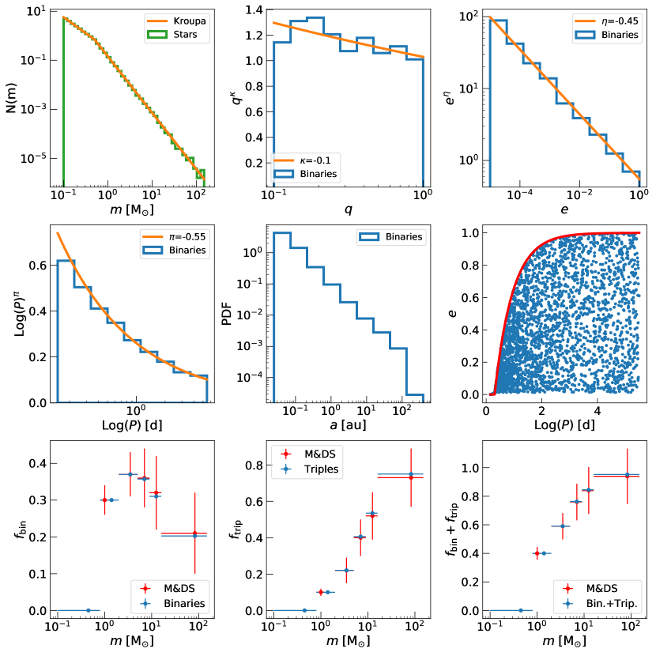
2.1 خوارزمية توليد الثنائيات
طوّرنا خوارزمية جديدة لتوليد دالة كتلة ابتدائية واقعية (IMF) وجماعة واقعية من الثنائيات الأصلية، اعتمادا على الأرصاد (sana12; moe17). ويمكن قرن هذه الخوارزمية بسهولة مع أكواد مختلفة لتوليد فضاء الطور للحصول على طيف متنوع من الشروط الابتدائية لمحاكيات Nbody. وتتكون الطريقة من الخطوات الآتية.
-
a)
أولا، تسحب الخوارزمية عشوائيا جماعة من النجوم من IMF Kroupa01 بين و، لقيمة معيّنة للكتلة الكلية للجماعة.
-
b)
تُقرن النجوم بعضها ببعض بغرض الحصول على توزيع لنسب الكتلة يتبع sana12:
(1) يُضبط الاقتران لتوليد كسر ثنائي ، حيث هو عدد الأنظمة الثنائية و هو عدد النجوم المفردة، وهو يعتمد على كتلة النجم الأولي تبعا للنتائج الرصدية لدى moe17. ولغرض التبسيط، لا ندرج الأنظمة الثلاثية، لكننا نأخذ وجودها في الحسبان عند تقييم الكسر الثنائي عبر وسم عدد معيّن من النجوم المفردة بوصفها مكونات ثالثة للأنظمة الثنائية القائمة (تبعا لـ moe17). وينتج عن ذلك كسر من الثنائيات المعدودة كثلاثيات ()، ويمنع وجود عدد مفرط من الأنظمة الثنائية بين أكثر النجوم ضخامة. وباتباع هذا الإجراء نحصل على توزيع من نجوم مفردة وجسيمات ثنائية. نفترض في هذا العمل أن الكسر الثنائي يذهب إلى الصفر في مجال الكتلة : إذ تشير الأرصاد إلى أن نسبة النجوم الثنائية في هذا المجال الكتلي منخفضة على أي حال (moe17)، وأن إدراج هذه النجوم الثنائية منخفضة الكتلة كان سيزيد الكلفة الحسابية للمحاكيات زيادة كبيرة. الكسر الثنائي الناتج للنجوم ذات الكتلة هو .
-
c)
تُسند إلى الجسيمات المفردة والثنائية توزيعة في فضاء الطور عبر قرن الخوارزمية المذكورة أعلاه بمولد لتوزيعات فضاء الطور. وفي هذا العمل، نظرنا في اختيارين لمولد توزيع فضاء الطور. في الحالة الأولى، قرنا خوارزميتنا بإجراء الجمع/التقسيم الملخص في الأقسام التالية والمشروح تفصيلا في ballone21. وفي الحالة الثانية، يُنشأ توزيع فضاء الطور باستخدام الكود McLuster (Kupper11).
-
d)
أخيرا، تُقسّم الجسيمات الثنائية إلى نجوم منفصلة، وتُولّد توزيعات فتراتها المدارية () وشذوذاتها المدارية () تبعا لـ sana12:
(2) و
(3) حيث نحدد، لفترة مدارية معطاة، الحد الأعلى لتوزيع الشذوذ المداري وفقا للمعادلة (3) في moe17:
(4) ثم تُحوّل الخصائص المدارية للثنائيات إلى مواضع وسرعات بافتراض توزيع متساوي الخواص للمستويات المدارية.
يوضح الشكل 1 مثالا على جماعات الثنائيات المتولدة بواسطة هذه الخوارزمية. ويمكن استخدام هذه الشروط الابتدائية لدراسة تطور النجوم الثنائية في المراحل المبكرة واللاحقة من حياة عنقودها النجمي المضيف ضمن طيف واسع من التكوينات الابتدائية. إضافة إلى ذلك، فإن توليد الشروط الابتدائية عبر هذه الخوارزمية ذو كلفة حسابية مهملة. وأخيرا، فإن الإجراء الموصوف ملائم أيضا لتوليد شروط ابتدائية لدراسات اصطناع الجماعات.
2.2 المحاكيات الهيدروديناميكية
إن العناقيد النجمية المدروسة في هذا العمل تُستحصل بتطبيق خوارزميتنا على خرج المحاكيات الهيدروديناميكية للسحب الجزيئية المضطربة المقدمة في ballone20 وballone21. تُجرى هذه المحاكيات الهيدروديناميكية باستخدام كود الهيدروديناميك للجسيمات الملساء gasoline2 (Wadsley04; Wadsley17). وفي هذا العمل، ننظر في المحاكاة الهيدروديناميكية المهيأة بكتلة كلية قدرها . تمتلك السحابة كثافة ابتدائية منتظمة قدرها 250 cm-3، ودرجة حرارة ابتدائية قدرها 10 K، وهي في حالة ابتدائية هامشية الارتباط، بنسبة فيريالية ، حيث و هما الطاقة الحركية وطاقة الوضع على التوالي. ويتكون الاضطراب من مجال سرعات عشوائي Gaussian عديم التباعد، متبعا طيف قدرة Burgers48. وقد عولج ترموديناميك الغاز باعتماد معادلة حالة أدياباتية مع إضافة التبريد الإشعاعي (Boley09). ولم تُدرج التغذية الراجعة النجمية. يُنفّذ تشكل النجوم عبر خوارزمية جسيمات sink تعتمد المعايير نفسها كما في Bate95.
عند 3 Myr (للاطلاع على مناقشة لهذا الاختيار انظر ballone21)، نزيل كل الغاز من المحاكيات آنيا، محاكين أثر انفجار مستعر أعظم. ونطبق خوارزمية الجمع/التقسيم على خصائص جسيمات sink عند 3 Myr، كما هو مفصل في القسم الفرعي الآتي. نحيل إلى ballone20 وballone21 لمزيد من التفاصيل عن المحاكيات الهيدروديناميكية.
2.3 خوارزمية الجمع/التقسيم
قدّم ballone21 خوارزمية جديدة لتوليد جماعات نجمية من جسيمات sink الناتجة عن محاكيات هيدروديناميكية. وتتمثل هذه الخوارزمية إما في جمع كتل جسيمات sink أو تقسيمها، وهي كتل تتأثر بآثار غير فيزيائية (مثل دقة المحاكاة وخوارزمية جسيمات sink المعتمدة)، وذلك للحصول على دالة كتلة جديدة وأكثر واقعية لنجوم “الأبناء”. وبهذه الطريقة ترث الجماعة النجمية المستحصلة توزيع فضاء الطور المضطرب المتولد من المحاكيات الهيدروديناميكية، لكنها تمتلك دالة كتلة واقعية. ونلخص هنا الخطوات الرئيسة لعملية الجمع/التقسيم.
أولا، تُنشأ جماعة من النجوم ذات IMF مختارة، لقيمة معيّنة لكتلتها الكلية. تُستخدم خوارزمية الجمع عندما يكون النجم أكثر كتلة من أكثر جسيم sink كتلة. ووفقا لخوارزمية الجمع، نختار أكثف منطقة في توزيع جسيمات sink ونندمج جسيمات sink المجاورة إلى أن نحصل على كتلة النجم. وتُسند موضع النجم وسرعته بوصفهما موضع وسرعة مركز كتلة جسيمات sink المجمعة. وتميل خوارزمية الجمع إلى تعزيز الفصل الكتلي في المناطق المركزية من العناقيد النجمية المحاكاة.
أما فرع التقسيم من الخوارزمية فيُطبق إذا كان جسيم sink ضخم أكثر كتلة من أي نجم متبق. وفي هذه الحالة، نطرح كتلة النجوم الفردية من جسيم sink الضخم إلى أن تبقى كتلة أصغر من 0.1 . وتُعاد الكتلة المتبقية إلى أقرب جسيم sink، وذلك لفرض حفظ الكتلة محليا وكليا. ثم تُوزع نجوم الأبناء التابعة لكل جسيم sink حول موضع وسرعة جسيم sink الأب وفق توزيع Plummer فيريالي (نستخدم لهذه الخطوة وحدة new_plummer_model في amuse، Pelupessy13). في ballone21، اعتمدنا نصف قطر نصف كتلة Plummer قدره pc، مما أتاح حفظا جيدا للطاقة والنسبة الفيريالية في جميع المحاكيات الهيدروديناميكية في العينة. أما في هذا العمل فنفضل نصف قطر نصف كتلة Plummer قدره pc لأن هذا الاختيار يتيح، لهذا العنقود النجمي تحديدا، حفظا أفضل للطاقة الكلية وتغيرا أصغر في النسبة الفيريالية. تُكرر عملية الجمع/التقسيم دوريا إلى أن تُستهلك إما جميع جسيمات sink أو جميع النجوم.
2.4 محاكيات N-body المباشرة
في محاكيات body المباشرة لدينا، استخدمنا كود Nbody للجمع المباشر nbody6++gpu (wang15) مقرونا بكود اصطناع الجماعات mobse (Mapelli17; giacobbo18; giacobbomapelli18; giacobbo19; mapelli18)، وهو نسخة مطورة من bse (hurley00; hurley02). ينفذ nbody6++gpu مكاملا Hermite من الرتبة 4، وخطوات زمنية كتلية فردية (makino92)، وتنظيما Kustaanheimo-Stiefel للقاءات القريبة والأنظمة الفرعية قليلة الأجسام (stiefel65; mikkola93). ويُستخدم مخطط الجيران (nitadori12) لحساب إسهامات القوة عند فواصل زمنية قصيرة (خطوات قوة/زمن غير منتظمة)، في حين يسهم جميع أعضاء النظام في تقييم القوة عند فواصل زمنية أطول (خطوات قوة/زمن منتظمة). وتُقيّم القوى غير المنتظمة باستخدام CPUs، بينما تُحسب القوى المنتظمة على GPUs باستخدام معمارية CUDA. ويتضمن تكامل القوة حقلا مديا خارجيا ساكنا شبيها بالجوار الشمسي (wang16). في جميع حالاتنا، نعدّ النجم هاربا إذا بلغ مسافة عن مركز الكثافة تزيد على أربعة أمثال نصف القطر المدي للعنقود. وتتجنب القيمة المختارة لمسافة الإزالة وجود هاربين محتملين في الحساب (takahashi12; moyanoloyola13). ويتضمن mobse وصفات محدثة لرياح النجوم الضخمة (giacobbo18)، ولانفجارات مستعرات انهيار اللب العظمى (fryer12; giacobbomapelli20)، ولعدم استقرار الأزواج (Mapelli20). وقد دُمج nbody6++gpu وmobse كما وصفه dicarlo19; DiCarlo20b.
3 الشروط الابتدائية لمحاكيات N-body
تُستحصل الشروط الابتدائية لمحاكيات Nbody من المحاكيات الهيدروديناميكية (الموسومة فيما يأتي بـ Hydro) عبر الجمع بين خوارزمية توليد الثنائيات الموصوفة في القسم 2.1 وإجراء الجمع/التقسيم (القسم 2.3). تُعرض الخصائص الرئيسة للشروط الابتدائية للعنقود النجمي في الجدول 1. يمتلك النظام كتلة كلية قدرها ، ونصف قطر نصف كتلة (معرّف بوصفه نصف قطر Lagrangian البالغ 50% والمتمركز في مركز الكثافة) pc، ونصف قطر لب (معرّف بوصفه نصف قطر Lagrangian البالغ 10% والمتمركز في مركز الكثافة) pc. بعد الإزالة الآنية للغاز، يُترك النظام في حالة فوق فيريالية، مع .
| Name | |||||
|---|---|---|---|---|---|
| (M⊙) | (pc) | (pc) | |||
| Hydro | 1.70 | 0.06 | 1.53 | 0.06 | |
| King | 0.42 | 0.06 | 1.53 | 0.06 | |
| Loose Fract | 1.70 | 0.30 | 1.53 | 0.06 | |
| Dense Fract | 0.32 | 0.07 | 1.53 | 0.06 |
العمود الأول: اسم مجموعة المحاكيات؛ العمود الثاني: الكتلة الكلية ؛ العمود الثالث: نصف قطر نصف الكتلة ؛ العمود الرابع: نصف قطر اللب ؛ العمود الخامس: النسبة الفيريالية ؛ العمود السادس: الكسر الثنائي (إذا كانت الثنائيات الأصلية موجودة).
بغية تكميم أثر المكونات الفيزيائية المختلفة في التطور الديناميكي لعنقود نجمي، نأخذ في الحسبان أربع حالات تطورية مختلفة:
-
•
Bin: تطور بوجود نجوم ثنائية أصلية ومن دون تطور نجمي.
-
•
Bin+SE: تطور بوجود نجوم ثنائية أصلية ومع تطور نجمي. افترضنا فلزية شمسية (، anders89)، بغية مطابقة العناقيد النجمية الفتية في مجرة درب التبانة (Portegies-Zwart10) وتعظيم الفرق بالنسبة إلى الحالة من دون تطور نجمي، لأن فقدان الكتلة بفعل الرياح النجمية مرتفع للغاية عند الفلزية الشمسية (مثلا، vink01; kudritzki02).
-
•
NoBin: حالة بلا نجوم ثنائية أصلية وبلا تطور نجمي.
-
•
NoBin+SE: حالة بلا نجوم ثنائية أصلية لكن مع تطور نجمي.
تتيح لنا المقارنة بين الحالات الأربع المختلفة المذكورة أعلاه رؤية شاملة لأثر الثنائيات والتطور النجمي في التطور الديناميكي لعنقود ذي توزيع واقعي للنجوم في فضاء الطور.
في كل حالة، أجرينا 10 محاكيات لتحقيقات مختلفة من الجمع/التقسيم بغية ترشيح التقلبات العشوائية.
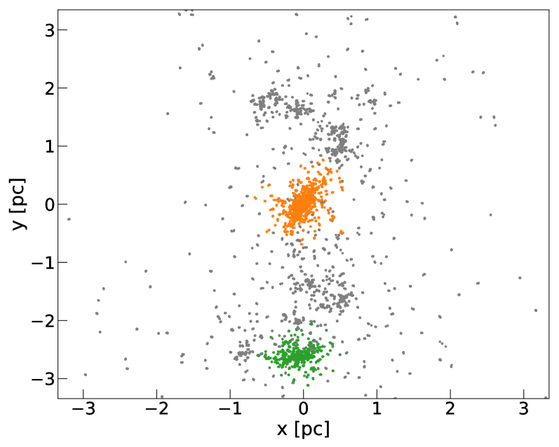
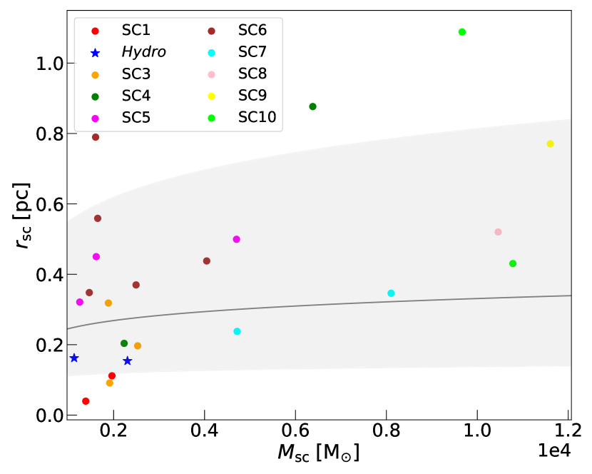
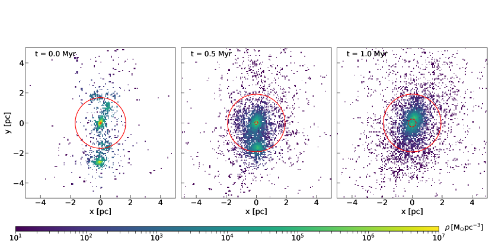
3.1 المقارنة مع شروط ابتدائية أخرى
قارنا تطور الشروط الابتدائية Hydro بتطور توزيعات ابتدائية أخرى في فضاء الطور، تُستخدم عادة في دراسات ديناميك العناقيد النجمية. ولغرض إجراء مقارنة عادلة، ضبطنا شروطا ابتدائية تطابق مقياس الكتلة وإما مقياس الطول المركزي () أو مقياس الطول الكلي () لعناقيد Hydro الخاصة بنا. وتُولّد جميع الشروط الابتدائية بقرن كود توليد الثنائيات لدينا بـ McLuster (Kupper11) كما وُصف في القسم 2.1. نظرنا في ثلاث حالات:
-
•
King: نموذج king66 يطابق نصف قطر لب الشروط الابتدائية الهيدروديناميكية. ولّدنا نموذج King بنصف قطر نصف كتلة قدره pc وتركيز مركزي قدره . والقيمة المختارة للتركيز المركزي عالية، وهي نمطية للعناقيد التي يُعتقد أنها خضعت لانهيار اللب. ولهذا السبب يمكن توقع تطور ما بعد انهيار اللب في هذه الحالة وفي المناطق المركزية من الحالة الهيدروديناميكية على السواء.
-
•
Loose Fract: كرة كسيرية، بالكتلة الكلية نفسها ونصف قطر نصف الكتلة نفسه كما في حالة Hydro. وفي هذه الحالة اخترنا بعدا كسيريا .
-
•
Dense Fract: كرة كسيرية بالكتلة والبعد الكسيري نفسيهما كما في الحالة السابقة، لكن بنصف قطر نصف كتلة مضبوط وفقا لعلاقة MK12:
(5) في هذه الحالة لدينا pc و pc. ومن المثير للاهتمام أن نصف قطر اللب يكون شبيها جدا بنصف قطر لب الشروط الابتدائية Hydro.
بالنسبة إلى جميع هذه الشروط الابتدائية، ضبطنا النسبة الفيريالية نفسها كما في حالة Hydro. وتُلخّص الخصائص الفيزيائية لجميع الشروط الابتدائية في الجدول 1.
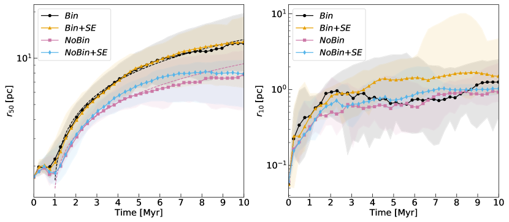
4 النتائج
4.1 التكتل الابتدائي للعنقود النجمي
إن التوزيع المكاني الابتدائي لمحاكاة متكتل وذو بنى فرعية، كما يتضح في الشكل 2. ويتكون العنقود النجمي أساسا من تكتلين فرعيين رئيسين كثيفين جدا ومن بعض العناقيد والخيوط الصغرى وغير المنتظمة. عرّفنا أولا التكتلين الفرعيين الرئيسين باستخدام خوارزمية dbscan (Density-Based Spatial Clustering of Applications with Noise) (DBSCAN)11 1 التنفيذ الذي اعتمدنا عليه هو تنفيذ مكتبة python Scikit-learn (sklearn.cluster.DBSCAN، pedregosa11). تتطلب dbscan تعريف معاملين، و. المعامل هو عدد النقاط داخل مسافة الإسناد اللازمة لكي تُعد نقطة ما نقطة لبية. وإلا فإنها توسم بوصفها ضجيجا. في حالتنا، ضبطنا هذين المعاملين استنادا إلى نصف قطر نصف كتلة العنقود وإلى العدد الكلي للنجوم: و.. هذه الخوارزمية تتيح تجميع النقاط معا في مناطق عالية الكثافة: وتوسم هذه نقاطا لبية، وتميز عن النقاط في مناطق منخفضة الكثافة، التي توسم بوصفها ضجيجا تظهر نتيجة إجراء التجميع في اللوحة العلوية من الشكل 2: إذ تنجح الخوارزمية في تحديد العنقودين الفرعيين الرئيسين.
يمتلك التكتل الفرعي الرئيس كتلة قدرها (35% من الكتلة الكلية) ونصف قطر نصف كتلة قدره ، في حين يمتلك التكتل الفرعي الثاني كتلة قدرها (17% من الكتلة الكلية) ونصف قطر نصف كتلة قدره . تحققنا مما إذا كانت كتل التكتلات الفرعية وأنصاف أقطار نصف الكتلة متسقة مع المعادلة (5)، وهي العلاقة بين الكتلة الكلية ونصف قطر نصف الكتلة التي وجدها MK12 في أنوية السحب المشكِّلة للنجوم. وقد وجد fujii21 مؤخرا أن هذه العلاقة تصمد في محاكيات N-body/SPH للعناقيد المغمورة ذات الكتلة حتى نحو ، وأنها تُحفظ بعد طرد الغاز. في هذه الحالة، ننظر في التكتلات الفرعية الموجودة في عينة العناقيد النجمية التي درسها ballone21، والتي تمتد إلى كتل أعلى، بين و. وكما تبين اللوحة السفلى من الشكل 2، فإن هذه العينة متسقة جيدا مع المعادلة (5).
4.2 التطور الكلي
4.2.1 التطور المبكر ()
يعرض الشكل 3 المرحلة الأولى جدا () من التطور لعنقود تمثيلي واحد. عند Myr، يقع مركز الكثافة داخل التكتل الرئيس على نحو واضح، في حين يكون التكتل الفرعي الرئيس الثاني خارج الكرة المحددة بنصف قطر نصف الكتلة. عند Myr، تكون بنية العنقود قد تطورت تطورا ملحوظا. فمن جهة، وعلى المقاييس الصغيرة، يتمدد كل تكتل فرعي بسرعة نتيجة للإزالة الآنية للغاز، مما يخفض كثافته المحلية. ومن جهة أخرى، يقترب التكتلان الفرعيان الرئيسان أحدهما من الآخر، وبهذا يوازنان التمدد صغير المقياس على مقياس أكبر. وتميز هاتان الآليتان المتنافستان أول Myr من المحاكاة.
عند Myr يكون العنقود قد اتخذ تقريبا شكلا أحادي البنية. ويكون نصف قطر نصف الكتلة أكبر قليلا ( pc) مما كان عليه في بداية المحاكاة (حين كان pc)، في حين نما نصف قطر اللب بسرعة أكبر بكثير، كما يتضح بسهولة من الشكل 3. وعادة يبلغ التحقيق شكلا أحادي البنية بعد Myr (ولا يتحقق هذا الشرط عند نحو Myr إلا في عدد محدود من الحالات)، بعد فترة قصيرة يتفاعل فيها التكتلان الفرعيان تفاعلا مديا من دون اندماج. ويعرض العنقود الناتج شكلا ممدودا، نتيجة للتفاعل المدي القوي والحركة النسبية بين التكتلات الفرعية.
يتوافق مجال المقاييس الزمنية للاندماج مع نتائج fujii15b، التي تستطيع محاكياتها أن تعيد إنتاج خصائص أنواع مختلفة من العناقيد النجمية الفتية في آن واحد، من العناقيد الضخمة والكثيفة إلى العناقيد المفتوحة وترابطات OB الأكثر رخاوة. وبهذا المعنى، عندما تُستغل محاكيات N-body لدراسة التطور المبكر للعناقيد النجمية، فإن المقياس الزمني لاندماج التكتلات الفرعية يعتمد بقوة على الحالة الطاقية الابتدائية للسحابة الجزيئية، كما يمكن استنتاجه بمقارنة النتائج في fujii14 وballone21، اللذين هيآ سحبهما في حالة هامشية الارتباط. ومن الجانب الرصدي، يبدو أن هذا النوع من الاندماجات بين التكتلات الفرعية غير مفضل لتفسير تشكل العناقيد النجمية الفتية مثل NGC 3603 (banerjee13)، التي تتطلب خصائصها الرصدية إما قناة تشكل أحادية البنية أو تجميعا سريعا في . غير أن نتائج sabbi12 تلمح إلى أن اندماجات جارية بين عناقيد فتية جدا (مثل R136 وNortheast Clump في NGC 2070) قد تحدث أيضا.
4.2.2 تمدد العنقود
بغية النظر في كل من التطور الابتدائي المتكتل والتمدد الأحادي البنية اللاحق، طوّرنا العناقيد لمدة 10 Myr. يعرض الشكل 4 تمدد العنقود، الموصوف بواسطة و، للحالات التطورية الأربع جميعها. ونتيجة للآلية الموصوفة في القسم 4.2.1، ينمو نصف قطر نصف الكتلة في البداية، ويبلغ ذروة عند نحو 0.5 Myr، أي حين يدخل التكتل الفرعي الثانوي كرة نصف قطر نصف كتلة التكتل الفرعي الرئيس، ثم يتناقص. وعند 1 Myr، يبلغ حدا أدنى ثم ينمو رتيبا. ولا يعود تمدد متأثرا بالحركة النسبية للتكتلات الفرعية، التي تكون في هذا الوقت قد اندمجت أو أصبحت قريبة جدا بعضها من بعض، بل يرجع إلى التمدد صغير المقياس الذي بلغ الآن مقاييس أكبر. وفي المقابل، ينمو نصف قطر اللب بسرعة منذ بداية المحاكاة نفسها، لأن حركة التكتلات الفرعية لا تؤثر في هذه المقاييس الصغيرة.
يتضح أثر النجوم الثنائية في الطور الثاني من تطور العنقود، أثناء التمدد الأحادي البنية. ففي الواقع، تتمدد العناقيد ذات الثنائيات الأصلية أسرع بعد 1 Myr: عند هذه النقطة لا يعود التفاعل واسع المقياس للتكتلات الفرعية موجودا، وتظل الكثافة في المنطقة المركزية عالية بما يكفي (من رتبة M⊙ pc-3) للسماح بتفاعلات فعالة وتبادل للطاقة بين النجوم الثنائية والبيئة المحيطة بها. أما في المراحل الأولى جدا، فإن التمدد الأسرع الناجم عن النجوم الثنائية يتوازن مع التطور الكلي للتكتلات الفرعية.
كما أوضحنا في القسم 3.1، تطابق المناطق المركزية للعنقود نموذجا King ذا ، وهي قيمة نمطية للعناقيد النجمية التي يُعتقد أنها خضعت لانهيار اللب. لذلك قارنا التمدد الأحادي البنية للعنقود بما يُتوقع على أساس تطور ذاتي التشابه عند كتلة ثابتة (Spitzer87):
| (6) |
حيث ثابت تناسب. إذا كان تطور العنقود تمددا في طور ما بعد انهيار اللب، فينبغي أن تكون الزيادة الزمنية في متسقة تقريبا مع المعادلة (6). أجرينا ملاءمة للقيم الوسيطة لـ من منحنيات 1 Myr باستخدام المعادلة (6). ومنحنيات أفضل ملاءمة الناتجة هي الخطوط المتقطعة في اللوحة اليسرى من الشكل 4. نعرض المنحنيات لحالتي Bin وNoBin، حيث ينبغي لغياب التطور النجمي أن يتجنب وجود آثار إضافية (مثل فقدان الكتلة) وأن يجعل الأثر الديناميكي للثنائيات أوضح. وتبدو منحنيات كلتا الحالتين متسقة مع طور ما بعد انهيار اللب حتى 10 Myr.
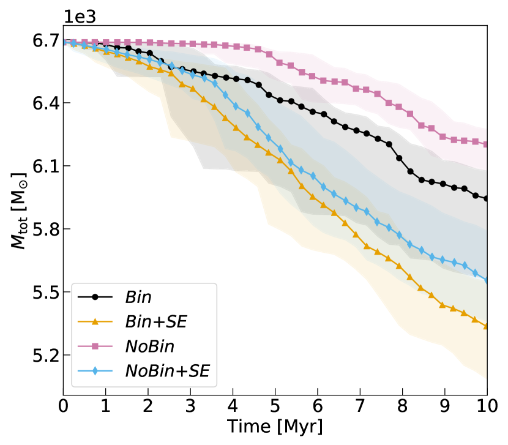
4.2.3 فقدان الكتلة
مع تمدد العنقود، تبتعد النجوم أكثر فأكثر عن مركزه إلى أن تُزال في النهاية من ديناميك العنقود بفعل المجال المدي للمجرة المضيفة. وهذا يجعل الكتلة الكلية للنظام النجمي تتناقص. ويزيد وجود النجوم الثنائية عدد النجوم الهاربة عبر تغذية تمدد أسرع. كذلك قد تؤدي التآثرات القريبة بين النجوم الثنائية والنجوم المفردة (أو الثنائية الأخرى) إلى قذف النجوم، وربما أيضا الأنظمة الثنائية. إضافة إلى ذلك، تجعل عمليات التطور النجمي (مثل الرياح النجمية وانفجارات المستعرات العظمى) النجوم المفردة، وبالتالي العنقود، تفقد كتلة.
يعرض الشكل 5 تغير الكتلة الكلية للعنقود. يعطي التطور النجمي الإسهام الرئيس في فقدان الكتلة في المراحل المبكرة من المحاكاة، مما يؤدي إلى ميل أشد في تطور الكتلة. بعد ، يصبح فقدان الكتلة في الحالات ذات التطور النجمي أكبر بمرتين من فقدانها في الحالات بلا تطور نجمي. إن غياب الثنائيات البدئية يؤخر فقدان الكتلة، لأن العنقود يحتاج إلى أن يكوّن ثنائياته ديناميكيا قبل أن تبدأ في قذف نجوم أخرى.
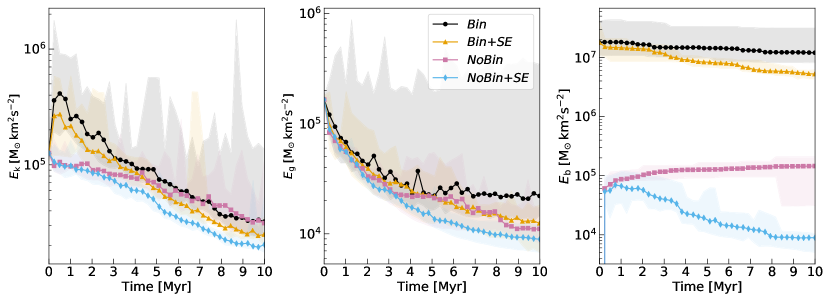
4.2.4 تغير الطاقة
يعرض الشكل 6 تطور الطاقة الحركية الكلية ()، وطاقة الوضع الكلية () لمراكز الكتلة، وطاقة الربط الكلية للأنظمة الثنائية (). تنتج النجوم الثنائية زيادة حادة ابتدائية في الطاقة الحركية عبر منح طاقتها الداخلية للنجوم المحيطة. وينتج عن ذلك تمدد العنقود السريع المرئي في الشكل 4. وبعد هذه الزيادة الحادة الابتدائية، تتناقص الطاقة الحركية للعناقيد ذات الثنائيات الأصلية بمعدل سريع نتيجة قذف النجوم عالية السرعة أو تبخرها. بعد أول Myr، تصبح الطاقة الحركية للعناقيد النجمية ذات الأنظمة الثنائية الأصلية شبيهة بطاقة العناقيد الأخرى، وتتطور بالطريقة نفسها خلال بقية المحاكاة.
طاقة الربط الكلية لجماعة الثنائيات الابتدائية أعلى بكثير من الطاقة الثقالية النمطية لمراكز الكتلة. فنجومنا الثنائية الأصلية، في الواقع، صلبة في معظمها، ويكفي جزء صغير من طاقتها الداخلية الكلية للتأثير بعمق في تطور العنقود. وينشأ انخفاض طاقة الربط الكلية من عاملين. أولا، تهرب بعض النجوم الثنائية من النظام. وهذا يسبب الانخفاض البطيء للخط الأسود في الشكل 6. ثانيا، يميل التطور النجمي والثنائي إلى إزالة النجوم الثنائية من الجماعة، عبر الاندماجات وانفجارات المستعرات العظمى، وكذلك عبر التصادمات المباشرة بين النجوم. وهذه العملية مهمة منذ المراحل الأولى جدا، لأن الكسر الثنائي عال جدا في أكثر النجوم ضخامة ولأن أنصاف المحاور الكبرى الابتدائية من sana12 منحازة نحو القيم الصغيرة. وبمقارنة نماذج Bin ونماذج Bin+SE، يمكن استنتاج أن هذا العامل الثاني هو المسؤول الرئيس عن تغير طاقة الربط الكلية.
إذا لم تكن هناك أنظمة ثنائية أصلية (نماذج NoBin وNoBin+SE)، فإن العنقود ينشئ جماعته الخاصة، بطاقات ربط من رتبة مقياس الطاقة الثقالية. وتتميز الحالة من دون تطور نجمي بزيادة رتيبة في طاقة الربط، حيث تتشكل الثنائيات وتميل أصلبها إلى مزيد من التصليب. وفي النهاية، تهيمن طاقة الربط لعدد قليل جدا من الثنائيات على طاقة الربط الكلية. وفي وجود التطور النجمي والثنائي، وبعد زيادة ابتدائية، تنخفض طاقة الربط الكلية حين تهيمن عمليات التطور النجمي والثنائي.
4.3 جماعات الثنائيات
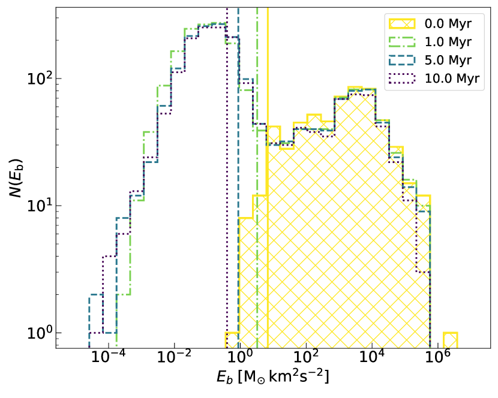
لفهم كيفية تطور جماعات الثنائيات وتفاعلها مع العنقود المضيف، يجب أن نقدّر كيف يرتبط توزيع طاقة ربطها بمتوسط طاقة العنقود. يعرض الشكل 7 توزيع طاقات الربط لمحاكاة تمثيلية واحدة عند أربع لقطات مختلفة، في وجود أنظمة ثنائية أصلية وتطور نجمي.
في بداية المحاكاة، تكون طاقات الربط كبيرة جدا إذا قورنت بمتوسط الطاقة الحركية. وبوجه خاص، يكون أصلب جزء من التوزيع أعلى بنحو خمس رتب مقدار من مقياس الطاقة النمطي للعنقود النجمي. وهذا يعني أن النجوم الأخرى في العنقود "ترى" أصلب الأنظمة الثنائية كما لو كانت نجوما مفردة: فالمقطع العرضي لأصلب الأنظمة الثنائية صغير إلى حد يجعل تفاعلها مع النجوم المفردة عسيرا.
في غياب أنظمة ثنائية أصلية ذات مقطع عرضي كبير بما يكفي، ينشئ العنقود النجمي أنظمة ثنائية جديدة، بنصف محور أكبر أعلى، ومن ثم بمقطع عرضي كبير للقاءات ثلاثية الأجسام. وهذا هو السبب وراء العدد الكبير من الأنظمة الثنائية التي تُنشأ في اللقطات اللاحقة، والتي تكون قريبة من متوسط الطاقة الحركية للعنقود. وأخيرا، يتكون الذيل الضعيف الارتباط من توزيع الثنائيات من ثنائيات رخوة تُنشأ وتُدمّر باستمرار بفعل التآثرات الديناميكية مع جيرانها.
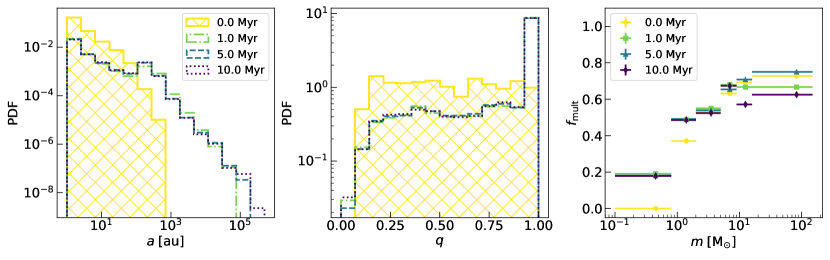
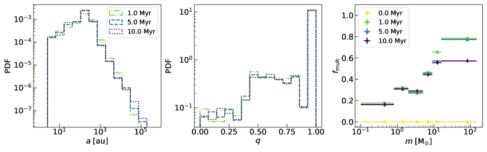
4.3.1 المعاملات المدارية وكسر التعددية
يعرض الشكل 8 تطور دالة كثافة الاحتمال (PDF) لأنصاف المحاور الكبرى للثنائيات ولنسب الكتلة وكسر التعددية، المعرّف بوصفه مجموع كسر الثنائيات وكسر الثلاثيات. وننظر في جماعتين تمثيليتين، إحداهما لمحاكيات ذات ثنائيات أصلية (وهي نفسها كما في الشكل 7) والأخرى لمحاكيات بلا ثنائيات أصلية، في وجود التطور النجمي.
في وجود الثنائيات الأصلية، تتغير PDFs تغيرا كبيرا مع الزمن بسبب إنشاء عدد كبير من الثنائيات الديناميكية. وبوجه خاص، يمتد توزيع أنصاف المحاور الكبرى إلى قيم أعلى، ويُظهر ذروة ثانوية عند AU، وهي القيمة النمطية التي تتشكل عندها الثنائيات الديناميكية. وتقابل هذه القيمة pc، وهو أدنى مقياس مسافة (إنه المسافة النمطية للنجوم المقسمة في كرات Plummer). وكما أوضحنا أعلاه، يستجيب العنقود لغياب الثنائيات المتفاعلة بأن ينشئ ثنائياته الخاصة. وهذا يفسر أيضا لماذا تكون توزيعات أنصاف المحاور الكبرى ونسب الكتلة المتكونة ديناميكيا شبيهة جدا بتلك التي تتكون في غياب الثنائيات الأصلية (كما يظهر في اللوحة السفلية اليسرى من الشكل 8).
أما بالنسبة إلى توزيع نسب الكتلة ()، فتنتج التآثرات الديناميكية زيادة حادة في PDF عند القيم العالية، لأن الثنائيات الجديدة تتكون عادة من النجوم منخفضة الكتلة في كرات Plummer. كذلك يمتد توزيع نسب الكتلة نحو قيم أدنى من الحد الأدنى الابتدائي (). وتقع معظم التغيرات في PDFs في أول 1 Myr، أي عندما تكون البيئة نشطة ديناميكيا. ومنذ ذلك الحين، تبقى توزيعات الثنائيات شبه ثابتة. كذلك، فإن العدد الكبير من الأنظمة الثنائية صغيرة الكتلة المتولدة ديناميكيا يزيد كسر التعددية الكلي من إلى . وبوجه خاص، تملأ هذه الأنظمة أدنى خانة كتلية في الشكل 1، بزيادة الكسر الثنائي من 0 إلى .
في غياب الثنائيات الأصلية (حالة NoBin+SE)، تنتج التآثرات الديناميكية توزيعا لأنصاف المحاور الكبرى شبيها بتوزيع الأنظمة الثنائية المتشكلة ديناميكيا في حالة Bin+SE، لكنها لا تستطيع إعادة إنتاج أصلب جزء من توزيع ثنائيات sana12. كذلك، تميل الآليات الديناميكية إلى إنشاء ثنائيات متساوية الكتلة. ومن اللافت أن الكسر الثنائي للثنائيات المتشكلة ديناميكيا في حالة NoBin+SE معتمد على الكتلة: إذ إنه يزداد مع كتلة النجم الأولي ويحاكي منحى التوزيع المرصود (moe17). ومن ثم، في غياب النجوم الثنائية الأصلية، يستطيع العنقود أن ينتج كسرا ثنائيا معتمدا على الكتلة. غير أنه لا توجد طاقة كافية على المقاييس الصغيرة لإعادة إنتاج أصلب جزء من التوزيع الابتدائي لـ sana12.
4.3.2 التبادلات
يمكن تكميم درجة التآثرات بين الأنظمة الثنائية وعنقودها المضيف بتقييم عدد التبادلات التي تحدث. يعرض الشكل 9 تغير العدد التزايدي للتبادلات. تشارك الثنائيات الأصلية في عدد محدود من التبادلات، يقع معظمها في أول 2 Myr من حياة العنقود، حين تسمح الكثافات بتفاعل فعال مع النجوم الأخرى. وفي التطور اللاحق، تتفاعل الثنائيات الأصلية أقل بكثير، كما يشير تسطح المنحنى. ومع ذلك، لأن الثنائيات الأصلية صلبة جدا، فإن التآثرات القليلة التي تخضع لها تبادل قدرا كافيا من الطاقة للتأثير في التطور الكلي للعنقود، كما يظهر من تطور (الشكل 4).
ومن المثير للاهتمام أن العدد الكلي للتبادلات أعلى بنحو رتبتين مقداريتين من عدد تبادلات الثنائيات الأصلية ولا يعتمد على وجود جماعة ابتدائية من النجوم الثنائية. ويشير هذا الجانب إلى أن العنقود قيد النظر بيئة نشطة جدا لتآثرات الثنائيات، ويؤكد أن أكثر الثنائيات تفاعلا هي المتكونة ديناميكيا بواسطة العنقود نفسه. غير أن معظم هذه التبادلات تتضمن ثنائيات ضعيفة الارتباط (انظر أيضا الشكل 7)، ومن ثم فإن تبادل طاقتها منخفض جدا بالمقارنة مع تبادل طاقة الثنائيات الأصلية.
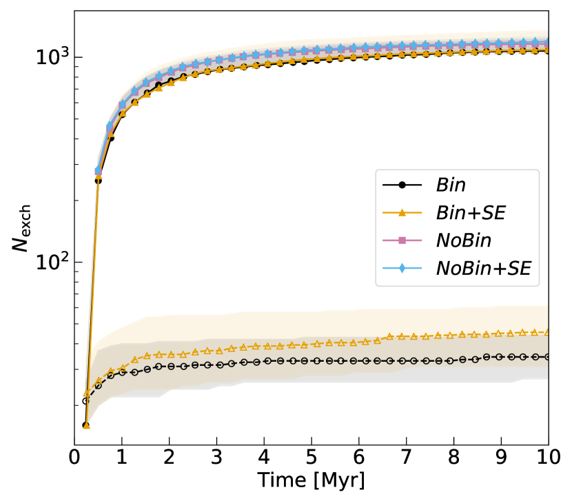
4.4 المقارنة مع شروط ابتدائية أخرى
يمكن فهم جدة الشروط الابتدائية Hydro على نحو أفضل إذا قارنا تطورها بتطور شروط ابتدائية أخرى أكثر مثالية. ولهذا الغرض أجرينا محاكيات بالشروط الابتدائية المعروضة في القسم 3.1. وبما أننا نريد التركيز على التطور الديناميكي مع توزيعات ابتدائية مختلفة في فضاء الطور، قررنا تشغيل هذه المحاكيات من دون تطور نجمي.
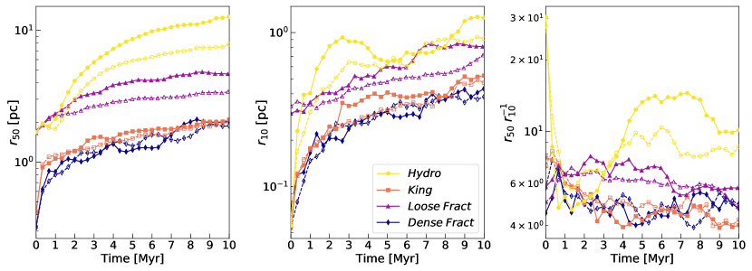
4.4.1 تمدد العنقود
يعرض الشكل 10 تطور وسطاء توزيعات ، و، ونسبة التي تقيس تركيز النظام. في الشروط الابتدائية، تمتلك عناقيد Hydro نسبة أكبر بكثير من النماذج الأخرى. ومن ثم فإن لها أنوية كثيفة جدا وهالات ممتدة نسبيا، بسبب مقياس البنى الفرعية. وبفعل هذه الفروق الجوهرية، يكون تطور أنصاف الأقطار المميزة لمحاكيات Hydro مختلفا إلى حد كبير عن تطورها في التوزيعات الأخرى.
في أول Myr، تكون حالة Hydro هي الوحيدة التي لا تُظهر زيادة رتيبة في بسبب حركة العناقيد الفرعية الابتدائية (كما نوقش في القسم 4.2.1). وتُظهر جميع الشروط الابتدائية الأخرى زيادة رتيبة في و، لكن بميلان مختلفة. وتُظهر حالة Loose Fract، المهيأة بنصف قطر نصف كتلة مساو لحالة Hydro، تمددا معتدلا على كلا المقياسين بسبب حالتها فوق الفيريالية. ولا تسمح الكثافة المنخفضة للمناطق المركزية (القيمة الابتدائية لـ أكبر منها في حالة Hydro بعامل 5، انظر الجدول 1) بتآثرات نجمة-نجمة فعالة من شأنها تغذية تمدد أسرع. أما نموذجا King و Dense Fract، المضبوطان لمطابقة نصف قطر لب محاكيات Hydro الابتدائية، فيخضعان لتمدد أقوى منذ بداية تطورهما. ويُظهر هذان الشرطان الابتدائيان المختلفان سلوكا متشابها جدا.
تتضح خصوصية تطور حالة Hydro عند أخذ تطور نسبة في الحسبان. فجميع الحالات باستثناء Hydro تعرض انخفاضا بطيئا ورتيبا في نسبة ، مما يشير إلى أن الأنظمة تتمدد بمعدل متشابه على كلا المقياسين. أما الشروط الابتدائية Hydro، فتُظهر انخفاضا حادا ابتدائيا، لأن نمو يتوازن مع حركة التكتلات الفرعية (انظر الشكل 4)، بينما يتمدد العنقود بسرعة على المقاييس الأصغر. وحتى بعد أن بلغ شكلا شبه أحادي البنية، يكون تطور نسبة فيه مختلفا جدا عن الشروط الابتدائية الأخرى: إذ ترتفع هذه النسبة بسرعة إلى أن تبلغ قيمة عظمى عند نحو 5 Myr. ويمكن تفسير هذا الفرق من حيث الفصل الكتلي الأقوى الذي يميز محاكاة Hydro (سنناقش هذه النقطة في القسم 5).
4.4.2 طاقات الربط
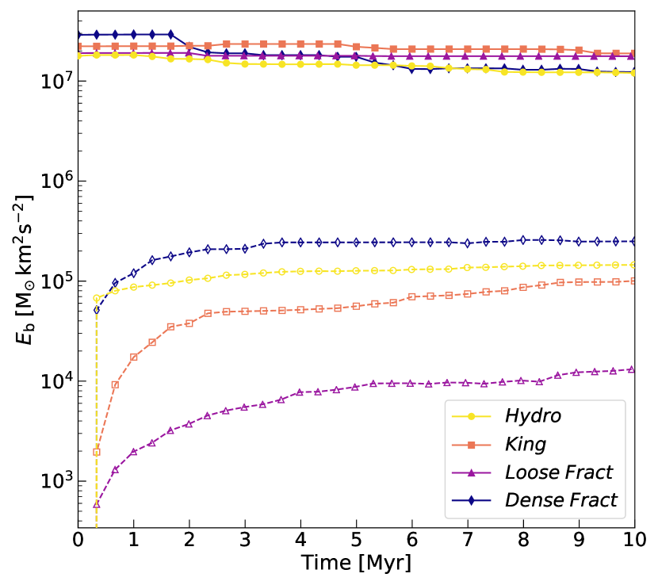
يعرض الشكل 11 تطور طاقة الربط الكلية لشروط ابتدائية مختلفة. في غياب الثنائيات الأصلية، ينشئ كل تكوين ابتدائي جماعته الخاصة، وترتبط طاقة الربط الكلية الناتجة ارتباطا وثيقا بمقياس الطاقة الابتدائي للنظام. وبوجه خاص، تكون طاقات الربط النهائية في Hydro وKing وDense Fract متشابهة فيما بينها لأنها مهيأة بأنصاف أقطار لب متشابهة، في حين أن طاقة الربط الكلية لأنظمة Loose Fract أقل بنحو رتبة مقدار واحدة. وتحتوي معظم طاقة الربط الكلية في عدد محدود من الثنائيات (من 2 إلى 5) التي تواصل التصليب مع تقدم المحاكاة. تؤكد هذه العلاقة بين طاقة الربط الكلية والمقاييس الكلية للعناقيد أن العناقيد النجمية أنظمة ذاتية التنظيم فيما يتعلق بجماعاتها الثنائية (goodman89; goodman93): ففي غياب الثنائيات، ينشئ كل نظام جماعته الخاصة من الثنائيات، ذات طاقات ربط من رتبة مقاييس طاقته الكلية.
5 مناقشة
تُظهر العناقيد النجمية Hydro تطورا مميزا جدا لنسبة . درسنا العامل الذي يحدد نمو هذه النسبة خلال الطور الأحادي البنية. ونركز، بوجه خاص، على أثر الدرجة الابتدائية للفصل الكتلي. ففي الواقع، تتيح درجة عالية من الفصل الكتلي لأكثر النجوم ضخامة أن تشكل بسرعة لبا مركزيا مركز التركيز ومنفصلا ديناميكيا عن بقية العنقود، وهو السيناريو الذي يشار إليه عادة بعدم استقرار Spitzer (spitzer69). وإذا حدث ذلك، يكون توزيع النجوم الضخمة أسخن من بقية العنقود، لأنها تبقى أكثر تركيزا ولأن القيمة المحلية لتشتت السرعات تنخفض مع المسافة عن المركز.
وجدت محاكيات Nbody سابقة دليلا على أن أكثر النجوم ضخامة في نظام ما لا تتحرك أبطأ من النجوم منخفضة الكتلة (parker16; spera16; webb17)، خلافا لما قد يتوقعه المرء استنادا إلى ميل الأنظمة النجمية نحو التقاسم المتساوي للطاقة (trenti13; bianchini16). وقد وُجد تأكيد بأن أكثر النجوم ضخامة يمكن أن تمتلك سرعات أعلى أيضا في أرصاد الحركة الخاصة للعنقود المفتوح NGC 6530 (wright19). وأظهر wrightparker19 أن هذا الجانب يمكن تفسيره بتركيب عدم استقرار Spitzer وانهيار بارد. فإذا بقيت أكثر النجوم ضخامة أكثر تركيزا من بقية العنقود، فمن المتوقع أن يتمدد اللب، الذي تسكنه غالبا هذه النجوم الضخمة، أبطأ من بقية العنقود.
لتكميم أثر الفصل الكتلي في تطور العنقود، اخترنا 30 أضخم جسيمات نجمية22 2 في حالة الثنائية، ننظر في الجسيم ذي الكتلة المساوية للكتلة الكلية للثنائية ونضعه في مركز كتلة الثنائية. وقيّمنا النسبة بين تشتت سرعاتها وتشتت سرعات جميع الجسيمات النجمية . وفي هذه الحسابات، لا تُعتبر إلا النجوم داخل نصفي قطر نصف كتلة، كما فُعل في wrightparker19. ويظهر تطور النسبة بين تشتتي السرعات هذين في اللوحة العلوية من الشكل 12. في جميع تكوينات فضاء الطور باستثناء Hydro، تكون نسبة تشتت السرعات نحو واحد ولا تتغير كثيرا مع الزمن. أما في حالة Hydro، فإن القيمة الابتدائية العالية لنسبة تشتت السرعات تشير إلى أن العنقود النجمي يمتلك فصلا كتليا ابتدائيا قويا. كذلك، خلال الطور الأحادي البنية، تنمو نسبة تشتت السرعات لأنه، بعد اندماج التكتلين الفرعيين الرئيسين، تنفصل أكثر نجومهما ضخامة بسرعة نحو المركز، بينما يتمدد النظام كليا. وقد يتعزز فصل النجوم الضخمة نحو مركز بئر الجهد بفعل أن النجوم في كل تكتل فرعي تكون قد شكلت بالفعل لبا ضخما يفصل كجسيم مفرد بالغ الكتلة. وفي الحالة ذات الثنائيات، تنمو قيمة تشتت السرعات بما يكفي لمطابقة القيمة المرصودة لـ NGC 6530.
تتأكد الصلة بين نمو نسبة تشتت السرعات ودرجة الفصل الكتلي من المنحى الذي تبديه نسبة أنصاف أقطار نصف الكتلة لأضخم 30 جسيمات نجمية ونصف قطر نصف الكتلة الكلي ، كما يظهر في اللوحة السفلى من الشكل 12. تُظهر محاكيات Hydro درجة ابتدائية قوية من الفصل الكتلي. ويجعل التمدد الابتدائي صغير المقياس هذه النسبة تنمو فورا؛ لكنها بعد ذلك تنخفض بسرعة بسبب الفصل القوي عند مركز العنقود. وتبدو الدرجة الابتدائية للفصل الكتلي العامل الأهم في نمو نسبة تشتت السرعات في حالة Hydro: فدرجة ابتدائية أقوى من الفصل الكتلي تحفز التشكل السريع للب كثيف يتمدد أبطأ من بقية العنقود. كذلك، يمكن للتشكل السريع للب كثيف أن يؤثر في معدل التآثر بين الثنائيات والعنقود المضيف. فإذا كانت الثنائيات الصلبة البدئية تعيش في بيئة أكثف، فهي أكثر احتمالا للتفاعل: وهذا يفسر لماذا تُظهر الشروط الابتدائية Hydro تمددات مختلفة للحالات ذات الثنائيات وبلا ثنائيات (الشكل 10).
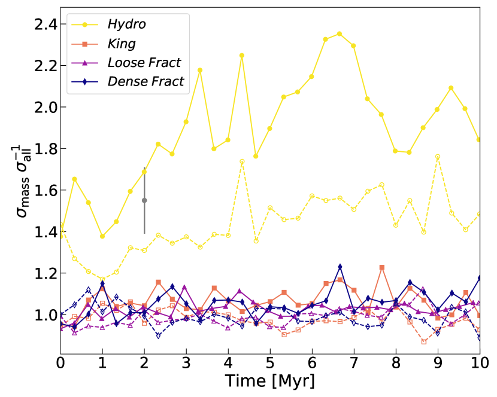
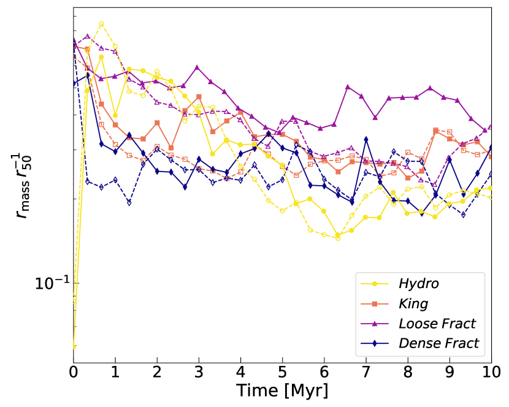
6 الملخص والاستنتاجات
درسنا التطور الديناميكي المبكر () للعناقيد النجمية الفتية ذات جماعات واقعية من الثنائيات وتوزيعات ابتدائية مختلفة في فضاء الطور. تُستحصل الشروط الابتدائية لمحاكيات Nbody لدينا بجمع خوارزمية جديدة لتوليد توزيعات نجمية وثنائية واقعية (sana12; moe17) مع خوارزمية الجمع/التقسيم المعرفة في ballone21، لاشتقاق شروط ابتدائية من محاكيات هيدروديناميكية.
بالنسبة إلى الشروط الابتدائية الهيدروديناميكية (عنقود Hydro)، نظرنا في حالات تطورية مختلفة بتفعيل وإيقاف وجود النجوم الثنائية الأصلية والتطور النجمي من أجل وزن إسهامهما في التطور الديناميكي. تظهر نتائجنا أن تطور العنقود يتميز بطورين تطوريين متميزين: أولا، يتوازن التمدد الكلي للعنقود مع تقارب تكتلاته الفرعية الرئيسة، بينما يتمدد العنقود آنيا على المقاييس الصغيرة. وبعد 1 Myr، يكون العنقود قد بلغ شكلا شبه أحادي البنية ويتمدد ككل، متبعا تمدد ما بعد انهيار اللب. وتميل الثنائيات إلى تسريع تمدد العنقود في هذا الطور، جاعلة نصف قطر نصف الكتلة يتمدد أسرع، في حين أن للتطور النجمي أثرا طفيفا في التطور الديناميكي المبكر للعنقود، لكنه ذو أثر كبير في فقدان الكتلة.
قارنا تطور العنقود النجمي Hydro بتطور عناقيد نجمية ذات توزيعات كروية للنجوم (King، Loose Fract، Dense Fract). ويتمثل الفرق الرئيس بين عنقود Hydro والآخرين في تطور نسبة ، التي تقيس تركيز النظام. ففي الواقع، يُظهر عنقود Hydro منحى مميزا لـ . وفي بداية المحاكيات، يكون أكبر بكثير في عنقود Hydro منه في النماذج الأخرى، لأن عنقود Hydro تجمّع من عدة تكتلات فرعية، مما ينتج نصف قطر نصف كتلة كليا كبيرا، لكن نصف قطر لبه صغير جدا، لأنه يتطابق أساسا مع نصف قطر لب أكثف تكتل فرعي. وتنخفض نسبة بسرعة كبيرة ( Myr) في عنقود Hydro، لتبلغ قيما مشابهة للعناقيد الأخرى، بسبب الاندماج الهرمي للتكتلات الفرعية، الذي يخفض نصف قطر نصف الكتلة الكلي. غير أنه عند Myr تواصل قيمة الانخفاض في النماذج الكروية، بينما تنمو مجددا في حالة Hydro. ويرجع النمو المتأخر لـ في عنقود Hydro إلى درجته الابتدائية العالية من الفصل الكتلي، التي تسمح له بتشكيل لب مركزي التركيز من النجوم الضخمة. وبما أن هذا اللب يتمدد أبطأ من بقية العنقود، فإن النسبة بين تشتت سرعات أكثر النجوم ضخامة وتشتت سرعات جميع النجوم تزداد. وفي الحالة ذات الثنائيات، تنمو هذه النسبة بما يكفي لمطابقة القيمة المرصودة لـ NGC 6530 (wright19).
النجوم الثنائية الابتدائية التي ضبطناها استنادا إلى قيود رصدية (sana12; moe17) تكون عموما صلبة جدا بحيث لا تتفاعل بكفاءة مع البيئة المضيفة. وتتعافى الأنظمة النجمية من نقص الثنائيات المتفاعلة عبر إنشاء ثنائيات إضافية ديناميكيا بطاقة ربط من رتبة طاقتها الحركية. كذلك، في غياب الثنائيات البدئية، يُظهر الكسر الثنائي للثنائيات المتشكلة ديناميكيا كسرا ثنائيا يزداد مع كتلة النجم الأولي. ويعيد هذا السلوك تلقائيا إنتاج العلاقة بين الكسر الثنائي والكتلة النجمية الموجودة في الأرصاد (moe17).
شكر وتقدير
يشكر MM وAB وUNDC وNG وSR الدعم المالي المقدم من European Research Council لمنحة ERC Consolidator المسماة DEMOBLACK، بموجب العقد رقم 770017. ويدعم NG كل من Leverhulme Trust Grant No. RPG-2019-350 وRoyal Society Grant No. RGS-R2-202004. ويساند إسهام MP في هذه المادة Tamkeen بموجب منحة NYU Abu Dhabi Research Institute رقم CAP3. ونقر باتفاقية CINECA-INFN لإتاحة موارد الحوسبة عالية الأداء والدعم. كما نشكر Simon Portegies Zwart على المناقشات المفيدة.
إتاحة البيانات
ستُتاح البيانات التي يستند إليها هذا المقال بناء على طلب معقول إلى المؤلفين المراسلين.